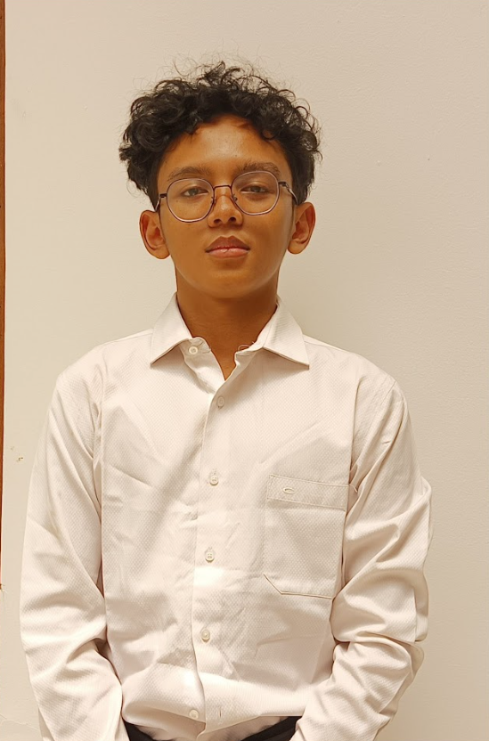
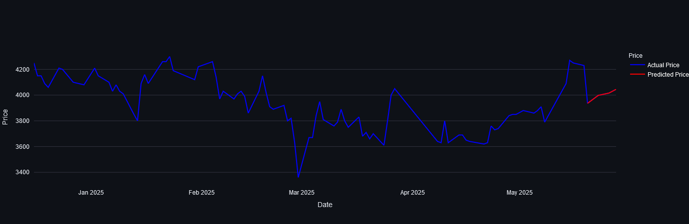
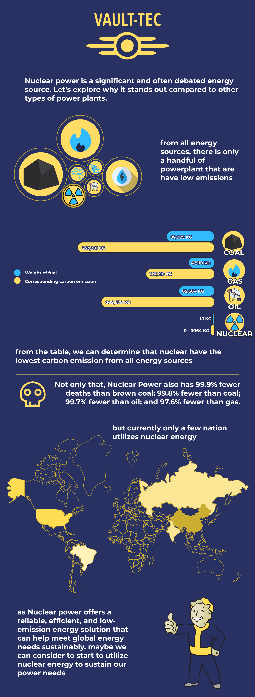
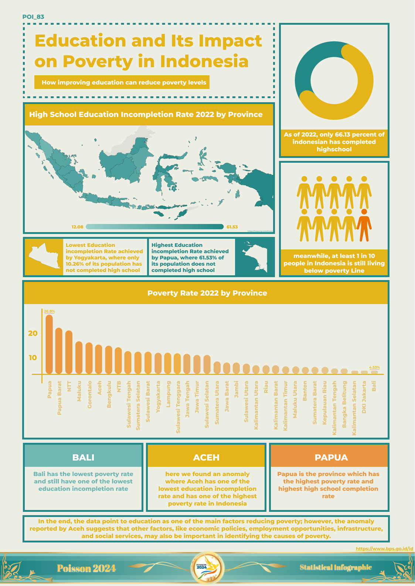

Hi! I'm Mushthafa
Aminur Rahman
Bridging the gap between raw data and organizational performance. Turning data into insights and intelligent solutions.

Everything you need
to know about me.
Telkom University
I am an undergraduate student specializing in Data Science, with a keen interest in data analytics, machine learning, and UI/UX design. I enjoy working with data to uncover insights, build predictive models, and develop data-driven solutions for real-world problems.
With a solid foundation in statistics, programming, and analytical thinking, I am eager to continuously learn and contribute in a collaborative and dynamic environment. I aim to leverage data to create impactful solutions and enhance user experiences.
Core Competencies
My Professional
Journey.
- Led the end-to-end development of templatehrd.com, a specialized web platform designed to streamline HR documentation and processes.
- Architected backend microservices and internal dashboards using TypeScript and PostgreSQL to monitor project health and resource allocation.
- Streamlined reporting workflows by automating SQL-based data extraction, which reduced manual errors and increased the speed of management decision-making.
- Translated founder requirements into technical roadmaps, ensuring marketplace platforms remained stable during high-traffic periods.
- Built and maintained ETL pipelines to ingest and process millions of server logs daily for critical infrastructure monitoring.
- Designed anomaly detection logic that proactively identified system irregularities, helping to reduce potential downtime for utility systems.
- Developed comprehensive technical documentation for data migration processes and server-side tracking logic to ensure knowledge transfer.
- People Analytics: Managed and analyzed internal member performance data to optimize department workflows and increase overall organizational engagement.
- Led a team in organizing technical workshops and networking events, acting as a bridge between academic theory and industry needs.
- Designed the internal reporting structure for association projects to ensure clear progress tracking and accountability.
- 2024 – 2025: Non Commanding Officer (Adviser), providing strategic oversight and guidance for festival execution.
- 2023 – 2024: Senior Officer, managing operational data, budgeting, and resource tracking for thousands of attendees.
- 2022 – 2023: Staff of Public Relations & Sponsorships, coordinating outreach and vendor logistics.
- Analyzed historical attendance and sales data to optimize event logistics and vendor placement, improving the overall visitor experience.
- Thesis: Used Deep Neural Network (DNN) architectures and SHAP for model interpretability to analyze university ranking factors.
- Relevant Coursework: Big Data Analytics, Cloud Computing Foundations, Machine Learning, Statistical Inference.
Checkout some of my
projects and works!
TemplateHRD.com
A specialized web platform designed to streamline HR documentation and processes, featuring backend microservices and internal dashboards using TypeScript and PostgreSQL.

Predictive Stock Engine (LSTM)
Developed a neural network-based dashboard using Streamlit to predict stock price movements with integrated real-time news sentiment analysis.

Nuclear Power Dashboard
Visualized the benefits and statistics of nuclear power plants versus other power sources to emphasize its potential as a sustainable low-emission solution.

National Poverty Trends
A user-centered design project visualizing Indonesian poverty data through a high-fidelity infographic to drive public awareness on education's impact.